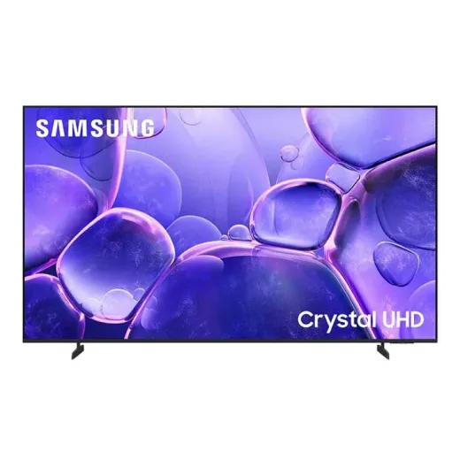
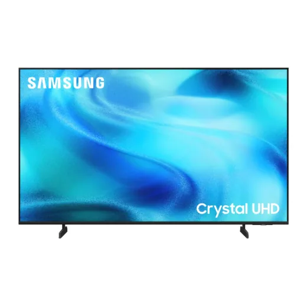

Samsung · Modelo UN75U8000F
Televisor Samsung 75" LED 4K Smart · UN75U8000F
L 17,990
Más barato en Diunsa
Precio en cada tienda
| Tienda | Precio | Antes | Disponibilidad | |
|---|---|---|---|---|
| Diunsa | L 17,990 | Disponible | Ver en tienda › | |
| Elektra | L 20,999 | Agotado | Ver en tienda › |
Precios referenciales tomados de cada tienda el 28 de noviembre de 2026. El precio válido es el que muestra la tienda al comprar.
Historial de precio
Lo seguimos desde el 1 de noviembre. Precio más bajo registrado: L 17,990 en Diunsa (27 de noviembre), igual que hoy. Cambios de precio registrados: 3.
Características
| Tamaño | 75" |
|---|---|
| Samsung | Crystal UHD |
| Audio | • Tecnología Object Tr |
| Pantalla | 75" |
| Resolución | 4K UHD |
| Panel | LED |
Descripción
El televisor Samsung 75 pulgadas 4K UN75U8000FPX tiene resolución 4K para imágenes nítidas y colores vivos, ideal para una experiencia de cine en casa. Su tamaño de 75 pulgadas es perfecto para salas grandes o espacios donde quieras una pantalla protagonista. Samsung es una marca reconocida en electrónica, lo que respalda la calidad de este televisor Samsung 4K.
Tamaño: 75 Pulgadas.
Resolución: 4K Ultra HD (3840 x 2160 píxeles).
Tecnología de Imagen: • Dynamic Crystal Color (amplia gama de colores).
• HDR (High Dynamic Range).
• Procesador Crystal 4K (para escalado de contenido y optimización de imagen).
• Motion Xcelerator (mejora el movimiento, ideal para deportes/juegos).
Smart TV: Sí.
Otros televisores Samsung
 Televisor Samsung 55" QLED 4K Smart · QN55QN80FAL 17,990En Diunsa
Televisor Samsung 55" QLED 4K Smart · QN55QN80FAL 17,990En Diunsa
TV LED Samsung "UN75U8500HP 4K/SmartL 17,990En Diunsa TV Miniled Samsung "UN75M70HAP 4K SmartL 17,990En Diunsa
TV Miniled Samsung "UN75M70HAP 4K SmartL 17,990En Diunsa Televisor Samsung 75" LED 4K · UN75U8000HL 17,995En 5 tiendas · más barato en Lady Lee
Televisor Samsung 75" LED 4K · UN75U8000HL 17,995En 5 tiendas · más barato en Lady Lee Televisor Samsung 75" Crystal UHD 4K Smart · U8000FL 17,995En Lady Lee
Televisor Samsung 75" Crystal UHD 4K Smart · U8000FL 17,995En Lady Lee Televisor Samsung 75" LED 4K · 8000HL 17,895En Walmart
Televisor Samsung 75" LED 4K · 8000HL 17,895En Walmart Televisor Samsung 65" QLED 4K Smart · QN65QN85DBPL 18,990En Diunsa
Televisor Samsung 65" QLED 4K Smart · QN65QN85DBPL 18,990En Diunsa Samsung 43 Qbc Series 4K Digital Signage · LH43QBCEBGCXGOL 19,990En Diunsa
Samsung 43 Qbc Series 4K Digital Signage · LH43QBCEBGCXGOL 19,990En Diunsa